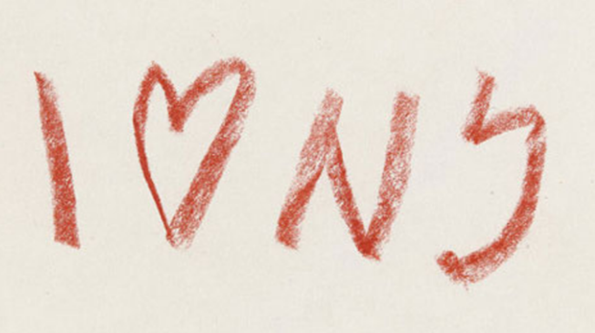

Home
About
Designs
Interview

밀턴 글레이저가 냅킨에 끄적인 낙서.
이후 'I♥NY' 라는 디자인으로 뉴욕의 새로운 로고를 만들어 낸다.
1975년 새로 탄생한 뉴욕의 로고, 'I♥NY'
뉴욕 필름 페스티벌 포스터.
밥 딜런의 베스트 앨범 자켓 디자인.
Great Illustrators of Our Time 포스터.
Baby Teeth 타입페이스.